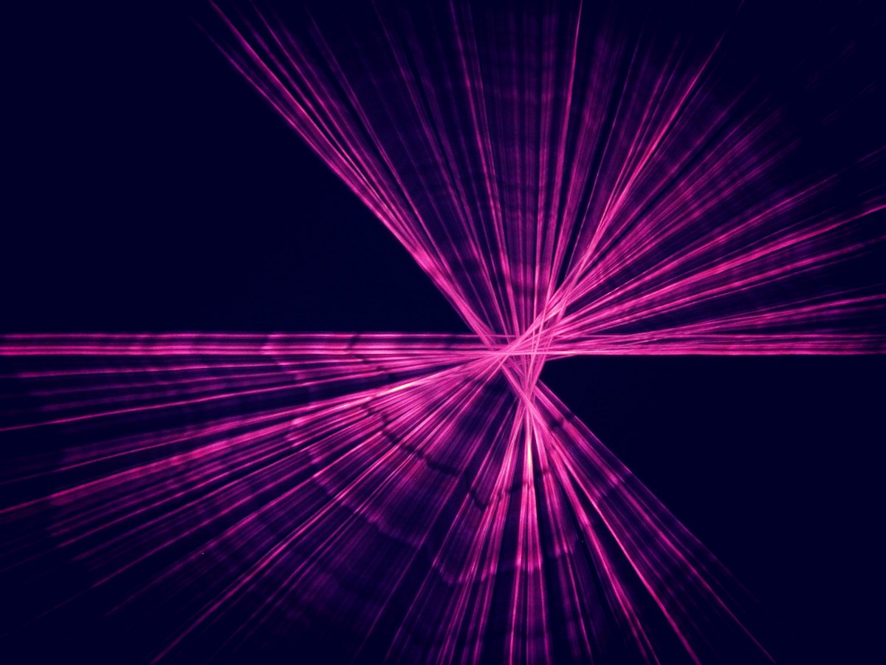

Two Trapped Ions Let a Gauge Field Decide Whether Matter Moves
An Oxford group built the smallest loop a lattice gauge theory allows, with matter and field sharing two ions. Flux, not force, stopped the particle.

Two strontium ions hang in a trap, and each one carries a qubit in two of its electronic levels. Lasers push on the ions' vibrational modes, and a single phonon in that shared motion stands for a particle of matter. That is the entire apparatus of a new simulation of a lattice gauge theory, reported this week in Nature Physics. The team is at the University of Oxford, with Sebastian Saner as first author.
The interesting part is the division of labor. Gauge fields live in the electronic states. Matter lives in the vibration. One loop of two links is enough to make a flux decide whether the particle moves at all, which is the Aharonov-Bohm idea dressed in lattice clothing.
What the loop actually holds
A lattice gauge theory puts matter on the vertices of a grid and the field on the links between them. The Oxford geometry is a closed, quasi-two-dimensional loop. Its two links are encoded by a pair of entangled qubits, and those two links double as the particle's two paths.
Nothing about the ions' positions sets the lattice. The geometry comes from which qubits and which vibrational modes are coupled to each other, so the dimensions the experiment uses are synthetic. That choice is what lets two ions carry a gauge theory at all.
The effect being chased
The Aharonov-Bohm effect says a charged particle's phase can change because of potentials in places the field never reaches. In a lattice version, the loop either encloses zero flux or it encloses one quantum of flux, a vison. The two states of the entangled link qubits are those two answers.
With zero flux, the two paths interfere constructively and the particle keeps moving. With a vison, the paths cancel. The experiment reads the difference in whether tunneling happens, not in a force anyone measures directly.
One link, then two
With one ion and one link, the particle tunneled back and forth while the field line switched on and off. That bookkeeping is what the Z₂ form of Gauss's law requires, and it is the base case. Setting the energy cost of a field line to zero produced full oscillations.
Add that cost and the oscillations came out faster but smaller, which suppresses tunneling. The report describes this as a precursor to confinement.
Two ions and two links turned the flux knob on. With zero flux, the particle tunneled twice as fast as on a single link. In the vison state, tunneling was fully suppressed and the particle stayed put.
Why the geometry is the news
Earlier simulations of gauge theories ran on cold atoms and superconducting qubits, and most of them were one-dimensional. A one-dimensional path has no loop to enclose flux, so the effect this paper demonstrates cannot appear there. Some two-dimensional platforms did exist, but they left out matter fields.
Without matter in the loop, flux has nothing to act on, and the measurement stays out of reach. "The advantage is that matter fields can be stored much more efficiently in the vibrational modes," Saner says of the trapped-ion choice.
The classical check carries weight
The reported behavior is that flux stayed constant apart from a slow decay from decoherence. To connect that to the theory, the team ran noise-aware numerical simulations that included vibrational heating, and the simulations matched the data.
Agreement between an experiment and a noise model built for it is where most of the interpretation lives. A reader who wants to judge the result needs both the raw counts and the heating assumptions, and the write-up points to the paper for the details.
What is not in the report
The report gives no error budget.
No fidelity, circuit depth, runtime or error-rate figure appears in the summary of the work. Those numbers exist in a trapped-ion paper, and they decide how much of the cancellation at the vison is physics and how much is drift. The DOI below is where to look.
Where this stops being checkable
The loop is one cell, and a classical computer can still solve it. The report says so, which is the honest boundary of the claim. "Even a relatively modest increase in lattice size could make the problem very difficult, if not impossible in practice," Saner says.
The next rungs are named too: move from Z₂ to Zₙ theories, then toward the limit where n grows without bound. The engineering costs are controlling the hybrid interactions and building state preparation and readout that keep up. The entangled-qubit flux idea came out of a brainstorm in 2022. Saner calls it one of the particularly exciting moments of the project. He says the hardest part was combining all the different ingredients and translating the theoretical ideas into a feasible experiment.
What a reader should hold onto
Two ions demonstrated that a gauge field can gate the motion of matter in a loop, and that the gate is flux. The demonstration is small on purpose, and its honesty depends on the classical check that still solves it. The interesting moment comes when that check falls behind, and the loop has to be believed on its own terms. Until then the result is a working instrument, which is a real achievement and a smaller one than a proof.